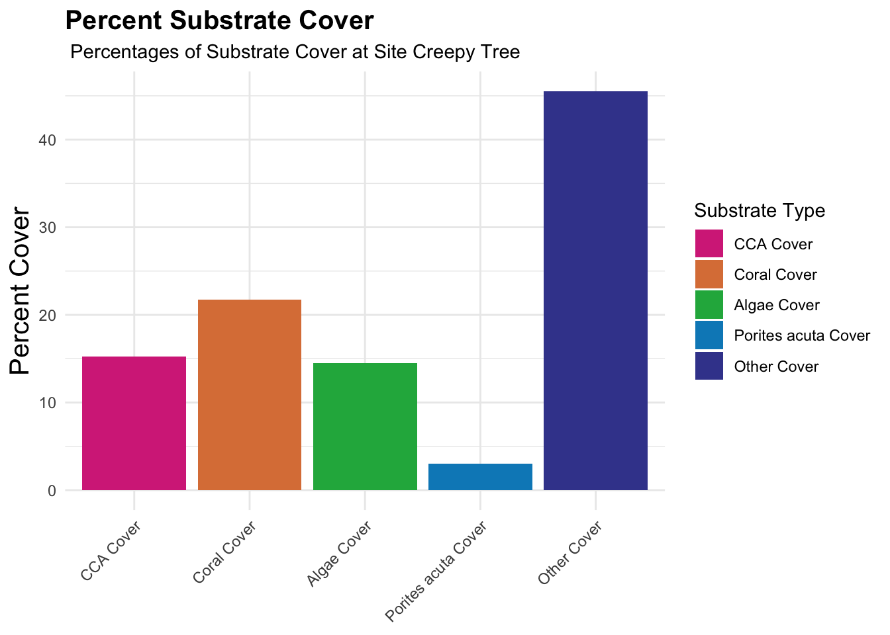

library(tidyverse)
library(here)
library(kableExtra)
library(fishualize)Week 6 Homework
knitr: opts_chunk: fig.path: “../Output/” —– saves figs to output, but won’t render on the html when in the YAML
Introduction:
This document is for Week 6 homework. It will include:
- Code chunks
- Figures
- Tables
Data selection:
I have chosen to look at data from the Site Characteristics Data from sites in Mo’orea. I have also taken a look at the Data Dictionary to get insight about the data that were collected. These data were collected by Dr.Nyssa Silbiger.
MooreaData<-read_csv(here("Week_06","Data","site.characteristics.data.csv")) #read in the data
DataDictionary<-read_csv(here("Week_06", "Data", "data_dictionary.csv"))
#take a look at the data
glimpse(MooreaData)Rows: 78
Columns: 5
$ name <chr> "Anemone Heaven", "Hilton High", "Public Beach", "M…
$ site.letter <chr> "F", "C", "B", "E", "D", "A", "F", "C", "B", "E", "…
$ site.block <dbl> 1, 2, 3, 1, 2, 3, 1, 2, 3, 1, 2, 3, 1, 2, 3, 1, 2, …
$ parameter.measured <chr> "light", "light", "light", "light", "light", "light…
$ values <dbl> 1674.241, 1193.230, 2647.890, 1533.245, 2114.013, 2…View(MooreaData)
View(DataDictionary)Data Analysis:
For this data set, I am going to take a look at the relationship between CCA cover and Algal cover, along with the percent of Nitrogen found in the tissue of Sargassum sp at each site. All sites are situated on the North Shore of Mo’orea.

This code chunk is going to extract the data we want to work with from the larger dataset.
##Need to filter out just the data we want: Site name, CCA cover, Algal Cover, %N
#| warning: false
#| message: false
PlotData<-MooreaData %>%
drop_na()%>%
group_by(name, parameter.measured, values)%>% #sort by these columns
summarise(mean_vals=mean(values, na.rm=TRUE))%>% #mean values of each parameter per site
mutate(parameter.measured= case_when(
parameter.measured=="N"~"Nitrogen", #change parameters to match data dictionary
parameter.measured=="CCA.cover"~"CCA Cover",
parameter.measured=="algal.cover"~"Fleshy Algae Cover",
TRUE~parameter.measured))%>%
filter(parameter.measured %in% c("Nitrogen","CCA Cover","Fleshy Algae Cover")) #filter out the other parameters I don't want`summarise()` has grouped output by 'name', 'parameter.measured'. You can
override using the `.groups` argument.This code will show a plot of % Algae and % CCA Cover for each of the sites
PlotData %>%
ggplot(aes(x=parameter.measured, y=mean_vals, group = parameter.measured, fill=parameter.measured))+
geom_bar(stat="identity")+ ###Allows the axes to be what I determine
facet_wrap(~name)+ ### Facet the graphs by site, shows means of each parameter for each
scale_fill_fish_d(option = "Scarus_quoyi")+ ###Color scheme from fishualize package
labs(title="Substrate Cover and Nitrogen Percentages at each Site",
subtitle="Mean Percentages of CCA and Fleshy Algae cover at sites in Mo'orea",
x=NULL,
y="Percent", ###Change axes and Titles etc
fill="Value Measured")+
theme_minimal()+
theme(axis.title=element_text(size=15))+
theme(plot.title=element_text(size=15,
face="bold"))+
theme(axis.text.x = element_text(angle=45,hjust = 1)) 
This code will create a plot to show the breakdown of substrate cover at the site with the most CCA cover
Plot2Data<-MooreaData %>%
drop_na()%>%
group_by(name, parameter.measured, values)%>% #sort by these columns
mutate(parameter.measured= case_when(
parameter.measured=="CCA.cover"~"CCA Cover", #change parameters to match data dictionary
parameter.measured=="algal.cover"~"Algae Cover",
parameter.measured=="p.acuta.cover"~"Porites acuta Cover",
parameter.measured=="substrate.cover"~"Other Cover",
parameter.measured=="coral.cover"~"Coral Cover",
TRUE~parameter.measured))%>%
filter(parameter.measured %in% c("CCA Cover","Algae Cover","Porites acuta Cover","Other Cover","Coral Cover"))%>% #filter out the other parameters I don't want
filter(name== "Creepy Tree")
Plot2Data$parameter.measured<- factor(Plot2Data$parameter.measured, levels = c("CCA Cover","Coral Cover","Algae Cover","Porites acuta Cover","Other Cover"))Plot2Data %>%
ggplot(aes(x=parameter.measured, y=values, group = parameter.measured, fill=parameter.measured))+
geom_bar(stat ="identity")+
scale_fill_fish_d(option = "Scarus_quoyi")+ ###Color scheme from fishualize package
labs(title="Percent Substrate Cover",
subtitle=" Percentages of Substrate Cover at Site Creepy Tree",
x=NULL,
y="Percent Cover", ###Change axes and Titles etc
fill="Substrate Type")+
theme_minimal()+
theme(axis.title=element_text(size=15))+
theme(plot.title=element_text(size=15,
face="bold"))+
theme(axis.text.x = element_text(angle=45,hjust = 1))

This code will make a nice table to assess the Nitrogen percentage in Sargassum sp taken at each site
TableData<-MooreaData%>%
filter(parameter.measured %in% c("N","CCA.cover", "algal.cover"))%>%
pivot_wider(names_from=parameter.measured,
values_from= values)%>%
group_by(name)%>%
mutate(site.letter=NULL, site.block=NULL)TableData%>%
kbl(col.names=c("Site", "% Nitrogen", "% CCA Cover", "% Algae Cover"))%>%
row_spec(6, bold=TRUE, color="black", background="lightpink")%>%
kable_material() | Site | % Nitrogen | % CCA Cover | % Algae Cover |
|---|---|---|---|
| Anemone Heaven | 0.7840256 | 6.10 | 37.150 |
| Hilton High | 0.7906739 | 10.25 | 32.625 |
| Public Beach | 0.6703865 | 7.50 | 20.000 |
| Manava | 0.8935947 | 4.00 | 22.375 |
| Sargassum Heaven | 0.8584450 | 1.25 | 14.500 |
| Creepy Tree | 0.7474160 | 15.25 | 14.500 |
Summary:
As seen in Figure 1, one of the sites with the lowest percent algal cover also displayed the highest percent CCA cover. These specific values are highlighted in Table 1. As seen in Table 1, the only other site with that low percentage of algae cover had a higher % Nitrogen detected in Sargassum sp tissue. In addition, the total substrate cover makeup was closer examined at that site in Figure 2.